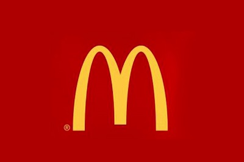
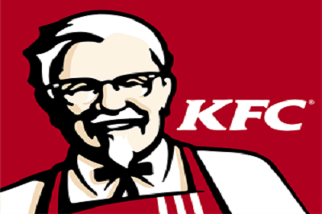
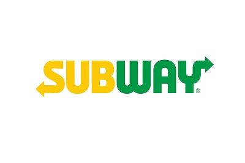
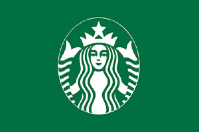

- McDonald's 
- KFC 
- Subway 
- Pizza Hut
- Starbucks 
- Burger King
- Domino's Pizza
- Dunkin' Donuts
- Dairy Queen
- Papa John's
Number of international restaurants: 18,710
McDonald's added just 212 eateries overseas last year, but its commanding lead left it still tops in international presence amongst American-based fast-food-chains.
Number of international restaurants: 11,798
The Yum! Brands division has more than 4,200 restaurants in China, where a poultry-feed scandal caused sales to decline last year
Number of international restaurants: 10,109
Subway operates in more than 100 countries now, having added Suriname and Russia last year.

Number of international restaurants: 5,890
Pizza Hut -- a sister company to Yum! Brands' KFC -- build 367 new international stores in 2012. The pizza chain also sold all its corporate-owned foreign restaurants to independent franchise owners last year.
Number of international restaurants: 5,727
The java giant now has coffee shops in over 50 countries, and added 220 international shops last year.

Number of international restaurants: 4,998
America's number-three burger chain is well-known abroad -- it's available in 73 countries. The chain ended the year with 170 more restaurants overseas.

Number of international restaurants: 4,422
Domino's now delivers in over 60 countries around the globe. The company's overseas restaurant count grew by 350 last year.

Number of international restaurants: 3,005
As you can see from the Russian storefront above, Dunkin' is a familiar name the world over. The U.S. donut leader operates in more than 30 countries and is on a huge international push, growing its overseas presence by more than 900 stores last year alone.

Number of international restaurants: 802
DQ’s hot eats and cool treats are familiar in 18 countries, including China -- which got its 500th Dairy Queen last year -- and Mexico, where the chain opened its 100th unit. The chain's overseas store count rose by over 150 last year, including the opening of its 100th restaurant in Mexico and 500th Chinese store. Dairy Queen is also bringing Orange Julius to more countries with its initiative to begin offering the juice and smoothie brand, which it owns, in its own Dairy Queen stores.

Number of international locations: 755
Papa John's positioning in the marketplace -- offering 'better pizza' for the masses -- paid off last year as the chain added 86 new overseas stores. Per-unit revenue is low compared to some other fast-food chains, though: Papa John's is #10 in number of units, but #20 in foreign revenue.